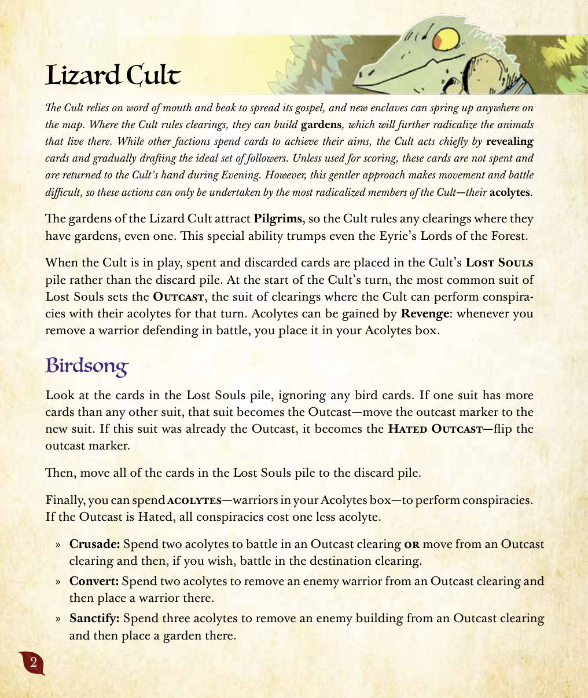
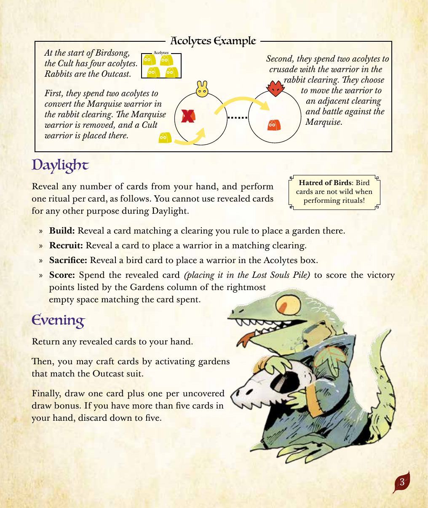
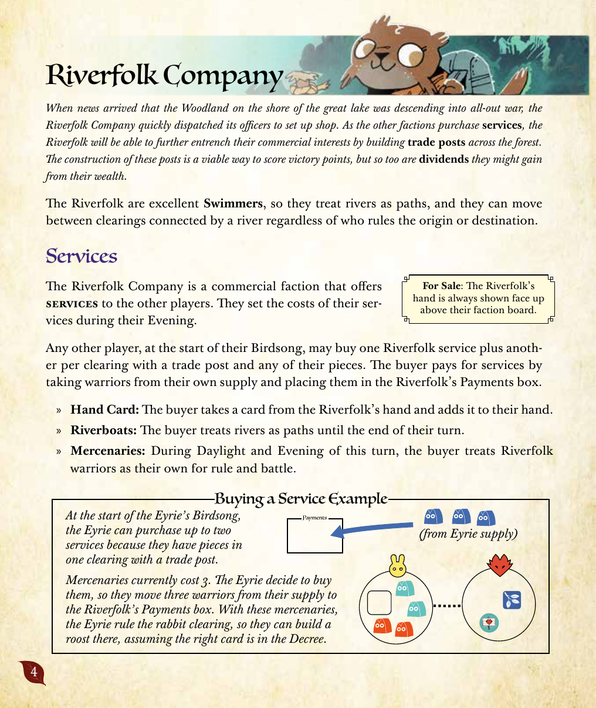
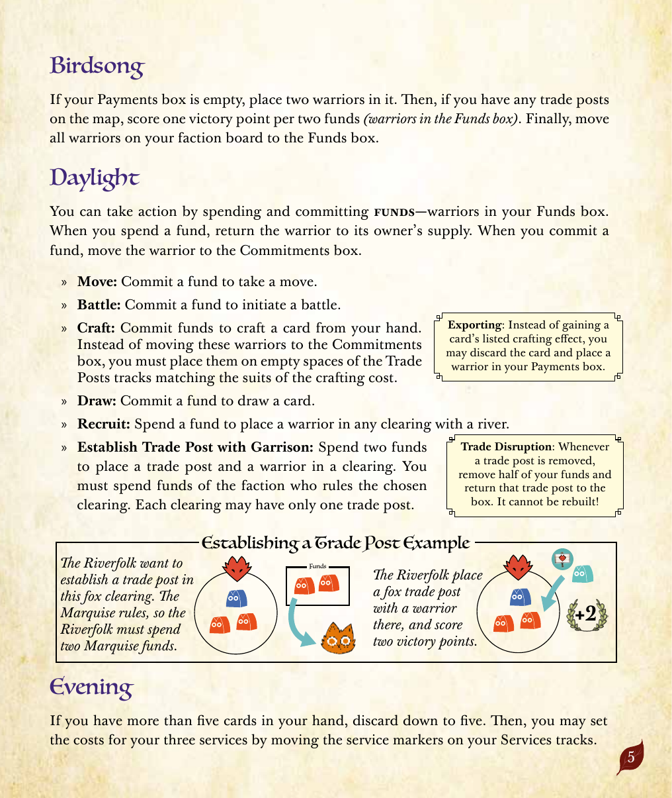
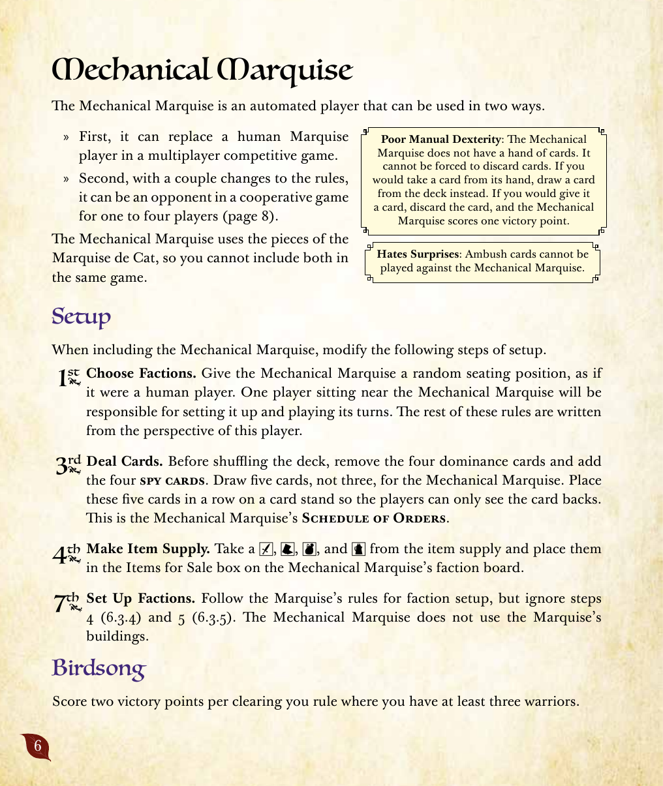
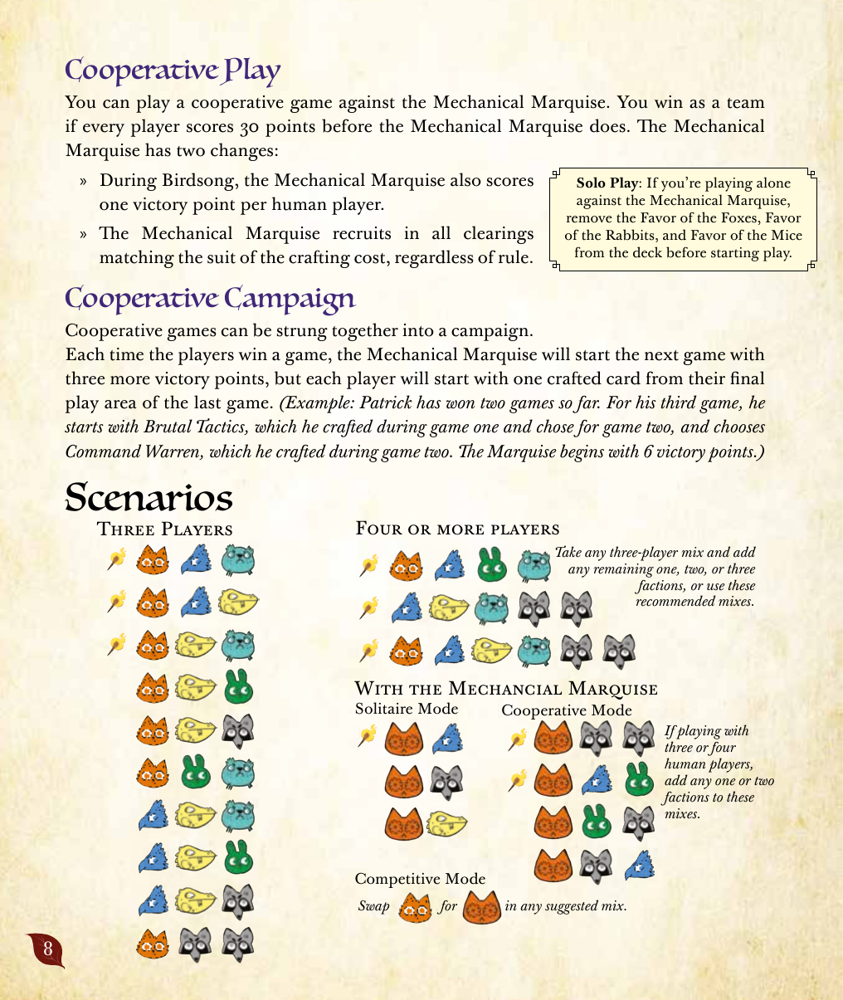

河の拡張：入門ルールブック
原題: The Riverfolk Expansion — Learning to Play ／会話調の解説と図解例を中心とした入門ガイド。厳密なルール文言は河の拡張（法典編） を参照。本書には2つの派閥（蜥蜴教団・河民商団）に加え、ソロ／協力プレイ用の「機械式侯国」システムと推奨シナリオも収録されている。
訳語について
派閥名「蜥蜴教団」「河民商団」は日本語版に基づく公式訳語。「機械式侯国」（原語: Mechanical Marquise）は本ドキュメント独自の訳語であり、未収録の用語は
用語集 に未掲載。詳細は本ページ末尾の報告を参照。
目次
蜥蜴教団
蜥蜴教団は、口と嘴の速さによって自分たちの教えを広めようとし、飛び地（蓮葉流民のものとは別の、教団の信仰拠点）はマップ上のどこにでも生まれうる。教団が支配する開拓地では「祭壇」を建てることができ、そこに住む動物たちをますます教団の教えに染め上げていく。他の派閥がカードを消費して目的を果たすのに対し、教団は主にカードを「公開」し、理想的な信徒の集団を少しずつ集めることで行動する。得点のために使わない限り、これらのカードは消費されず、夕闇フェイズに教団の手札へ戻る。しかし、この穏やかな手段のせいで移動や戦闘は難しい――これらのアクションは、教団の中でも最も信仰に染まった者たち、「狂信信徒」によってのみ行うことができる。
信徒の使い方の図解
まず、狂信信徒2体を消費して、兎の開拓地にいる侯国の兵士を改宗させる。侯国の兵士は除去され、代わりに教団の兵士がそこに置かれる。
昼光フェイズ
手札から好きな枚数のカードを公開し、公開したカード1枚につき1回の「儀式」を、以下のいずれかから選んで行う。公開したカードは、昼光フェイズ中に他の用途には使えない。
建設： 自分が支配する開拓地に一致するカードを公開し、そこに祭壇を置く。徴募： 一致する開拓地にカードを1枚公開し、兵士を1体置く。供犠： 鳥カードを1枚公開し、「狂信信徒」枠に兵士を1体置く。得点： 公開したカードを消費する（迷い子の山に置く）。公開したカードに一致するスートの祭壇トラックの、一番右にある空いている枠に記載された勝利点を得る。
鳥の災い
鳥カードは、儀式を行う際には万能カードとして扱えない！
夕闇フェイズ
公開していたカードをすべて手札に戻す。その後、疎外スートに一致する祭壇を発動してカードをクラフトしてよい。最後に、カードを1枚引き、露出した引き札ボーナス1つにつき1枚追加で引く。手札が5枚を超えていれば、5枚まで捨てる。

原書 p.2

原書 p.3
河民商団
大きな湖のほとりの森が全面戦争に突き進んでいるという報せが届くと、河民商団はすぐに自分たちの士官を派遣し、店を構えた。他の派閥が「サービス」を購入するにつれ、河民商団は森のあちこちに「商館」を建てることで、自分たちの商業的権益をさらに深く根づかせていく。商館の建設は勝利点を得る確かな手段だが、自分たちの富から得られる「配当」もまた同じくらい有効である。
サービス
河民商団は優れた「泳ぎ手」であり、河を道として扱う。そのため、出発地・目的地のいずれを誰が支配していようと、河でつながった開拓地の間を移動できる。
河民商団は、他のプレイヤーに「サービス」を提供する商業派閥である。サービスの価格は、自分（河民商団）の夕闇フェイズに設定する。
他のどのプレイヤーも、自分の鳥歌フェイズの開始時に、河民商団のサービスを1回購入できる。さらに、商館があり自分の駒のある開拓地1つにつき、追加で1回購入できる。購入者は、自分の供給庫から兵士を取り、河民商団の「支払い」枠に置くことでサービスの代金を支払う。
カードの受領： 購入者は河民商団の手札からカードを1枚取り、自分の手札に加える。川船： 購入者は、自分のターンが終わるまで河を道として扱う。傭兵： このターンの昼光フェイズと夕闇フェイズの間、購入者は河民商団の兵士を、支配と戦闘において自分の兵士として扱う。
手札についての補足
河民商団の手札は、自分の派閥ボードの上に常に表向きで示されている。
サービス購入の例
自分（鷲巣）の鳥歌フェイズの開始時、河民商団の「川船」サービスを兵士2体で購入する。河民商団は手札から「カードの受領」サービスも提供しているが、今は河を渡って移動したいので川船を選ぶ。
鳥歌フェイズ
「支払い」枠が空であれば、そこに兵士2体を置く。次に、地図上に商館が1つでもあれば、資金（「資金」枠にある兵士）2につき勝利点を1点得る。最後に、自分の派閥ボード上のすべての兵士を「資金」枠に移す。
昼光フェイズ
資金を投入・消費することでアクションを行える。資金を消費するときはその兵士を供給庫に戻し、資金を投入するときはその兵士を「投入済み」枠に移す。
移動： 資金を1つ投入して、移動を1回行う。戦闘： 資金を1つ投入して、戦闘を開始する。クラフト： 資金を投入して、手札のカードをクラフトする。これらの兵士は「投入済み」枠に移す代わりに、クラフトコストのスートに一致する商館トラックの空いている枠に置く。引く： 資金を1つ投入して、カードを1枚引く。徴募： 資金を1つ消費して、河に接する任意の開拓地に兵士を1体置く。駐留付き商館の設立： 資金を2つ消費して、開拓地に商館1つと兵士1体を置く。消費する資金は、その開拓地を支配するプレイヤーのものでなければならない。各開拓地には商館を1つしか置けない。
輸出
クラフトしたカードに記載された効果を得る代わりに、そのカードを捨てて、河民商団の兵士1体を「支払い」枠に置いてもよい。
貿易の混乱
商館が除去されるたびに、自分の資金の半分（端数は切り上げ）を取り除き、その商館を箱に戻す。除去された商館は再建できない。
駐留付き商館の設立の例
鷲巣の侯国が支配する開拓地に、自分（河民商団）が商館と兵士を置く。商館の設置には資金が2つ必要で、消費する資金は鷲巣のものでなければならない――鷲巣の兵士2体を供給庫に戻し、商館1つと自分の兵士1体をその開拓地に配置し、得点する。
夕闇フェイズ
手札が5枚を超えていれば、5枚まで捨てる。その後、各サービストラックのサービスマーカーを動かして、新しい価格を設定してよい。

原書 p.4

原書 p.5
機械式侯国
「機械式侯国」は、2つの方法で使うことができる自動プレイヤーである。1つ目は、多人数の対戦ゲームにおいて、猫野侯国を担当する人間のプレイヤーの代わりとして使う方法。2つ目は、ルールを少し変更することで、1人から4人までの協力プレイにおける対戦相手として使う方法である（「協力プレイとシナリオ」を参照）。
補足
機械式侯国は猫野侯国の駒一式を使うため、同じゲームに両方を含めることはできない。
手先の不器用さ
機械式侯国は手札を持たない。手札を捨てさせることはできない。機械式侯国の手札からカードを取る効果が発生した場合は、代わりに共有デッキからカードを1枚引く。機械式侯国にカードを渡す効果が発生した場合は、そのカードを捨て、機械式侯国は勝利点を1点得る。
準備
派閥を選ぶ。 機械式侯国にも、人間のプレイヤーと同様にランダムな席順を割り当てる。機械式侯国の近くに座ったプレイヤーが、その準備とターンの進行を担当する。以降のルールは、このプレイヤーの視点で記述する。カードを配る。 デッキをシャッフルする前に、支配カード4枚をデッキから取り除いておく。機械式侯国には（通常の3枚ではなく）5枚のカードを引き、カード立てにその裏面だけが見えるように並べる。これが機械式侯国の「指示書」となる。アイテムの供給を用意する。 アイテムの供給から靴・槌・剣・革袋を4個ずつ取り、機械式侯国の派閥ボードの「販売アイテム」枠に置く。派閥を準備する。 猫野侯国の準備手順に従うが、ステップ4・ステップ5（建物の配置）は無視する。機械式侯国は侯国の建物を使わない。

原書 p.6
昼光フェイズ
「指示書」の一番左にあるカードを公開し、以下のアクションを順番に行ってから、そのカードを捨てる。移動と戦闘は、指示カードのスートに一致するすべての開拓地で発生する。徴募は、指示カードのクラフトコストに基づき、ステップ3で示す方法で発生する。
戦闘。 機械式侯国の兵士と敵の駒がいる開拓地それぞれで戦闘を開始する。複数の敵派閥がいる開拓地では、以下の優先順位で防御側を選ぶ：駒の数が最も多い派閥、次に勝利点が最も多い派閥、次に準備順（A・B・Cなど）が最も早い派閥。移動。 「開拓地優先度」枠の番号が小さい開拓地から順に、自分が支配し兵士4体以上がいる開拓地から移動する。各移動では、出発地の開拓地に兵士を3体残し、それ以外の兵士をすべて移動させる。目的地は、隣接する開拓地のうち敵の駒が最も多いところとし、同数なら「開拓地優先度」の番号が小さいほうを選ぶ。徴募。 公開した指示カードのクラフトコストに応じて、自分が支配する開拓地に兵士を置く（下表参照）。クラフトコストがなければ、昼光フェイズを再び開始し、次の指示カードを公開する――「指示書」にカードが残っていなければ夕闇フェイズへ進む。
徴募の配置方法
クラフトコストの内容 配置する兵士
単一スートのコスト1〜3 そのスートの、自分が支配する各開拓地に、コストの数に等しい兵士を置く 各スート1ずつのコスト 自分が支配する各開拓地に兵士を1体ずつ置く 任意のスート4のコスト 城のある開拓地に兵士を4体置く
夕闇フェイズ
「指示書」が5枚になるまでカードを引き、指示書の右側に追加する。
密偵カードについて
密偵カードは、プレイ・捨て・入手可能カードの取得については支配カードと同じルールを使うが、勝利条件は変えない。自分の手元（プレイエリア）に密偵カードがある場合、自分の昼光フェイズに指示カードを1枚公開してよい。公開した指示カードのスートが自分の密偵カードと一致したら、ただちに密偵カードを捨てなければならない――この判定では鳥カードは万能にならない。その後、密偵カードを捨てていなければ、指示書の中の任意の2枚を入れ替えてよい。
原書 p.7
協力プレイとシナリオ
協力プレイは、ゲームの細かなルールを学ぶのに最適な方法であり、ボード上で自分たち独自の物語を語る楽しみ方でもある。友人と試してみたい、おすすめのシナリオをいくつか紹介する。
3人プレイ
原書には、3人プレイ向けに推奨される派閥構成が図解で示されている。具体的な組み合わせは原書ページの図版を参照のこと。
4人以上のプレイ
同様に、4人以上でプレイする場合に推奨される派閥構成が図解で示されている。
機械式侯国を使ったプレイ
»ソロモード： プレイヤー1人が、機械式侯国を相手に対戦する。
»協力モード： 複数のプレイヤーが手を組み、機械式侯国に対して協力する。3人または4人の人間プレイヤーでプレイする場合は、これらの組み合わせのいずれかに、さらに派閥を1つ追加してよい。
»対戦モード： 推奨される組み合わせの中の派閥を任意に入れ替えてよい。
ヒント
いずれのモードでも、派閥アイコンの組み合わせは原書ページの図版に詳しく示されている。初めて機械式侯国を使う場合は、ソロモードから試すとよい。

原書 p.8